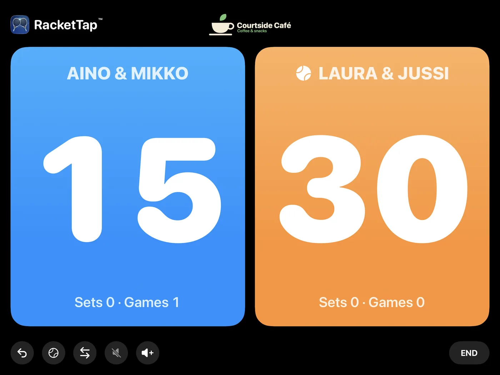
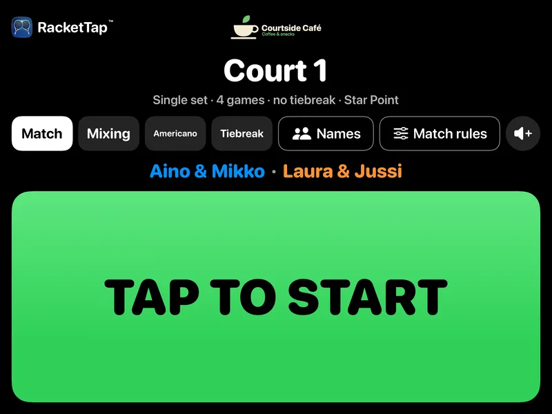
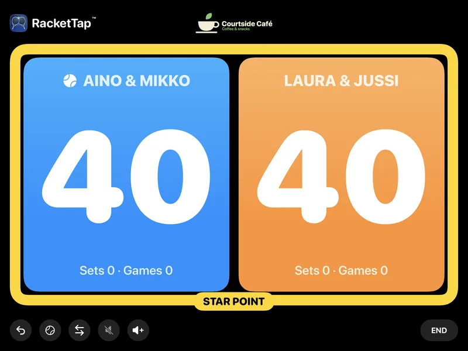
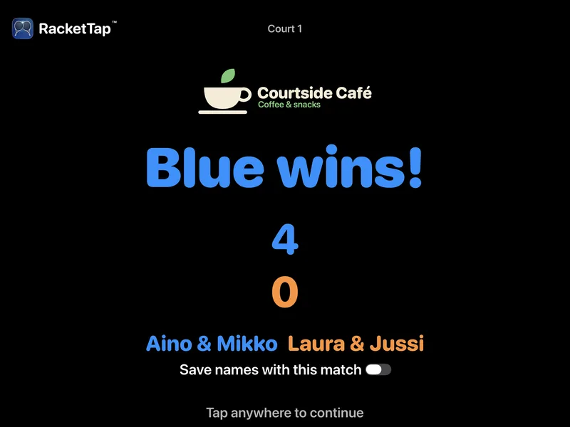
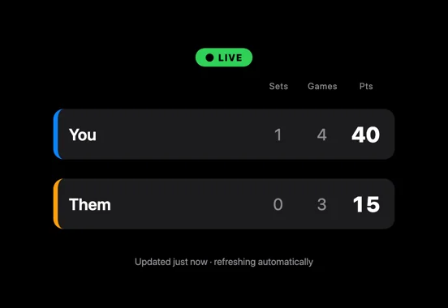
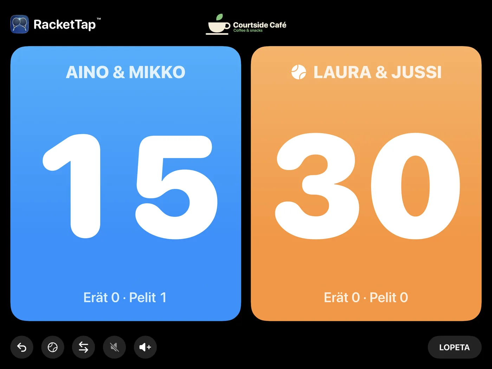
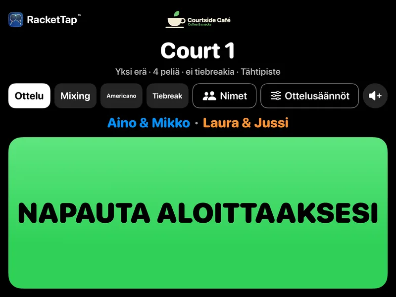
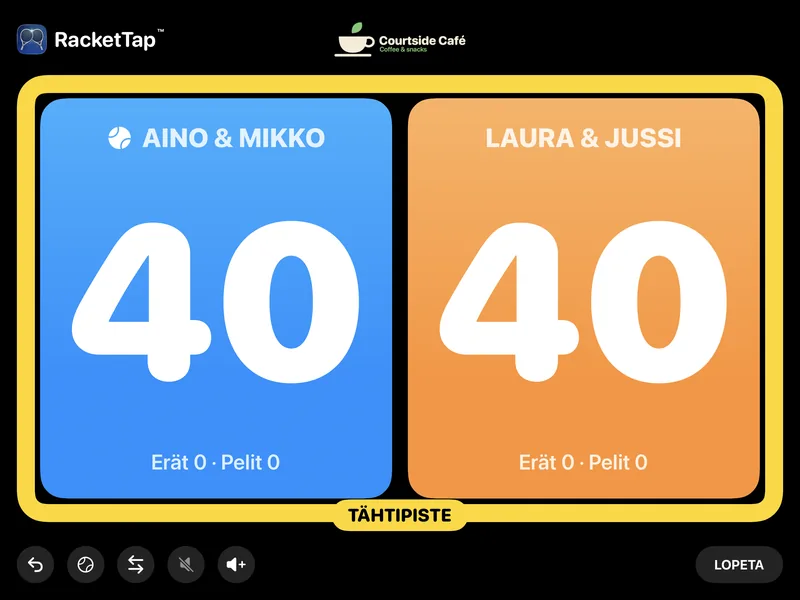
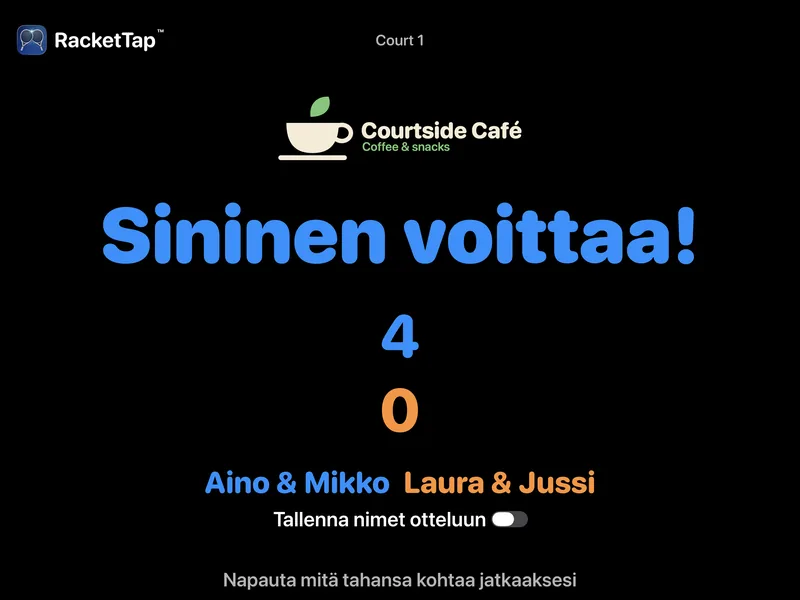

RacketTap Club turns an iPad at the court into a big, clear scoreboard. Players keep score with a button in their hand, the score is read out loud after every point, and friends follow the match live on their phones.
Built for padel, tennis, badminton and pickleball.

Players score with a small Bluetooth button. Nobody walks to the screen.
Announced after every point, so everyone on court knows where the game stands.
A QR code on the screen opens the live score for friends and spectators. No app needed.
Room for your club's logo on the court screen, and space for your sponsors.
No technician, no cabling, no server. If you can set up an iPad, you can set up a court.
On a stand or a wall mount at eye level, plugged in to power.
Open the install link we send you, on the court's iPad.
The app shows this iPad's device code. Tap Copy and email it to us.
We reply with an unlock code. Paste it in and tap Verify.
Choose a staff PIN, type the court name, pick the sport, then tap Start Club Mode.
Pair it once in the iPad's Settings → Bluetooth. The players take it from there.
One unlock code per iPad. The next court is the same six steps.
Press and hold the top-left corner of the court screen, over the RacketTap logo, for three seconds, then enter the PIN. There you can change the court name, the voice, the default sport and match type, and the sponsors, and see the match log.
Pair it once in the iPad's Settings → Bluetooth. Keep the iPad's volume a few steps below maximum: most buttons work by sending a volume press.
The iPad's own speaker reads the score. For a louder hall, connect a speaker in Settings → Bluetooth the same way. The voice is switched on or off with Announce the score in the court's settings.
A screen made to be read from the far baseline.



Live on their phonesPlayers tap Share online and the screen shows a QR code. Friends scan it and follow the score in their browser.

RacketTap Club is available to clubs with an agreement with Keret Software Oy. Contact us: matan504@gmail.com.
Tell us how many courts you would like to cover, and we'll take it from there.
The install link is sent to your club when your agreement starts.
Yes. Each unlock code works only on the iPad whose device code you sent us. Every court iPad gets its own code.
Install RacketTap Club on the new iPad and send us the device code it shows. You'll get a new unlock code for that iPad; the old iPad's code doesn't move across.
After the end date (shown under Valid until in the court's settings), the court stops scoring and goes back to the setup screen, which says why. Matches already played stay in the iPad's match log.
The PIN is kept on the iPad only in protected form, so nobody can read it back, us included. If someone still knows it, Change PIN in the court's settings sets a new one. After five wrong tries the PIN pad pauses for five minutes.
Remove licence in the settings also clears the PIN, but it needs the PIN too. If nobody knows the PIN, contact us and we'll help you reset that iPad.
No for scoring: the scoreboard, the voice and the match log all work offline. The live score on phones needs the iPad on Wi-Fi and signed in to iCloud with an Apple Account.
The running score and the team or player names typed on the court for that match. Nothing else: no heart rate, no location. Anyone with the link can view it while the match is shared. Details are in the privacy policy.
Yes. On the start screen they can pick the match type and adjust the match rules. When the court has been idle for the time you choose (5 to 20 minutes), it returns to the club's default.
Padel, tennis, badminton and pickleball. Each court has its own default sport.
No. Keret Software Oy collects no personal data: no accounts, no analytics, no ads, no tracking. Read the privacy policy.
Write to us and tell us about your club. We'll help you get the first court running.
matan504@gmail.comSuomeksi
RacketTap Club tekee kentän laidan iPadista ison ja selkeän tulostaulun. Pelaajat kirjaavat pisteet kädessä pidettävällä painikkeella, tulos kuulutetaan ääneen jokaisen pisteen jälkeen, ja kaverit seuraavat ottelua livenä puhelimestaan.
Padel, tennis, sulkapallo ja pickleball.

Pelaajat kirjaavat pisteet pienellä Bluetooth-painikkeella. Kenenkään ei tarvitse kävellä näytölle.
Jokaisen pisteen jälkeen, joten koko kenttä tietää tilanteen.
Näytön QR-koodista aukeaa live-tulos kavereille ja katsojille. Sovellusta ei tarvita.
Kenttänäytöllä on paikka seuranne logolle ja tilaa sponsoreillenne.
Ei asentajaa, ei kaapelointia, ei palvelinta. Jos osaat ottaa iPadin käyttöön, osaat ottaa käyttöön kentän.
Telineeseen tai seinäkiinnikkeeseen silmien korkeudelle, laturi kiinni.
Avaa lähettämämme asennuslinkki kentän iPadilla.
Sovellus näyttää iPadin laitekoodin. Napauta Kopioi ja lähetä koodi meille sähköpostilla.
Vastaamme avauskoodilla. Liitä se sovellukseen ja napauta Tarkista.
Valitse henkilökunnan PIN-koodi, kirjoita kentän nimi, valitse laji ja napauta Käynnistä klubitila.
Yhdistä painike kerran iPadin kohdassa Asetukset → Bluetooth. Pelaajat hoitavat loput.
Jokaiselle iPadille oma avauskoodi. Seuraava kenttä otetaan käyttöön samoilla kuudella askeleella.
Paina kenttänäkymän vasenta yläkulmaa RacketTap-logon kohdalta kolmen sekunnin ajan ja anna PIN-koodi. Asetuksissa voit muuttaa kentän nimeä, kuulutusta, oletuslajia ja -ottelutyyppiä sekä sponsoreita, ja nähdä ottelulokin.
Yhdistä painike kerran iPadin kohdassa Asetukset → Bluetooth. Pidä iPadin äänenvoimakkuus pari pykälää maksimin alapuolella: useimmat painikkeet toimivat lähettämällä äänenvoimakkuuden painalluksen.
iPadin oma kaiutin kuuluttaa tuloksen. Isommassa hallissa voit yhdistää kaiuttimen samalla tavalla kohdassa Asetukset → Bluetooth. Kuulutus kytketään päälle tai pois kentän asetusten kohdasta Lue tilanne ääneen.
Näyttö, jonka lukee kentän toisestakin päästä.



Livenä puhelimessaPelaajat napauttavat Jaa verkossa, ja näytölle tulee QR-koodi. Kaverit skannaavat sen ja seuraavat ottelua selaimessa.
RacketTap Club on saatavilla seuroille, joilla on sopimus Keret Software Oy:n kanssa. Ota yhteyttä: matan504@gmail.com.
Kerro, kuinka monelle kentälle haluatte tulostaulun, niin hoidamme loput.
Asennuslinkki lähetetään seurallenne, kun sopimus alkaa.
On. Avauskoodi toimii vain siinä iPadissa, jonka laitekoodin lähetitte meille. Jokainen kentän iPad saa oman koodinsa.
Asenna RacketTap Club uuteen iPadiin ja lähetä meille sen näyttämä laitekoodi. Saatte uudelle iPadille uuden avauskoodin; vanhan iPadin koodi ei siirry.
Päättymispäivän jälkeen (näkyy kentän asetuksissa kohdassa Voimassa asti) kenttä lopettaa pisteiden kirjaamisen ja palaa käyttöönottonäyttöön, joka kertoo syyn. Jo pelatut ottelut säilyvät iPadin ottelulokissa.
PIN-koodi on tallennettu iPadiin vain suojatussa muodossa, joten kukaan ei voi lukea sitä, emme mekään. Jos joku vielä muistaa koodin, kentän asetusten Vaihda PIN-koodi asettaa uuden. Viiden väärän yrityksen jälkeen PIN-näppäimistö lukittuu viideksi minuutiksi.
Asetusten Poista lisenssi tyhjentää myös PIN-koodin, mutta sekin vaatii PIN-koodin. Jos kukaan ei muista koodia, ota yhteyttä, niin autamme palauttamaan iPadin.
Pisteiden kirjaamiseen ei: tulostaulu, kuulutus ja otteluloki toimivat ilman yhteyttä. Puhelimien live-tulos vaatii, että iPad on Wi-Fi-verkossa ja kirjautuneena iCloudiin Apple-tilillä.
Ottelun tilanteen ja kentällä kyseiselle ottelulle kirjoitetut joukkueiden tai pelaajien nimet. Ei mitään muuta: ei sykettä eikä sijaintia. Kuka tahansa linkin saanut voi katsoa sivua niin kauan kuin ottelu on jaettuna. Lisätietoja tietosuojaselosteessa.
Voivat. Aloitusnäytöllä he voivat valita ottelutyypin ja muokata ottelusääntöjä. Kun kenttä on ollut käyttämättä valitsemanne ajan (5–20 minuuttia), se palaa seuran oletukseen.
Padel, tennis, sulkapallo ja pickleball. Jokaisella kentällä on oma oletuslajinsa.
Ei. Keret Software Oy ei kerää henkilötietoja: ei käyttäjätilejä, ei analytiikkaa, ei mainoksia, ei seurantaa. Lue tietosuojaseloste.
Kirjoita meille ja kerro seurastanne. Autamme ensimmäisen kentän käyntiin.
matan504@gmail.com